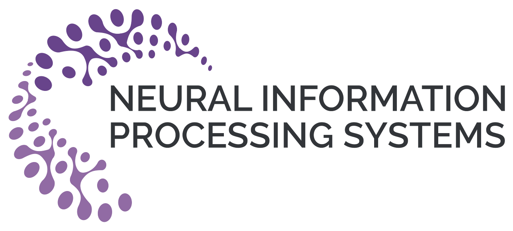
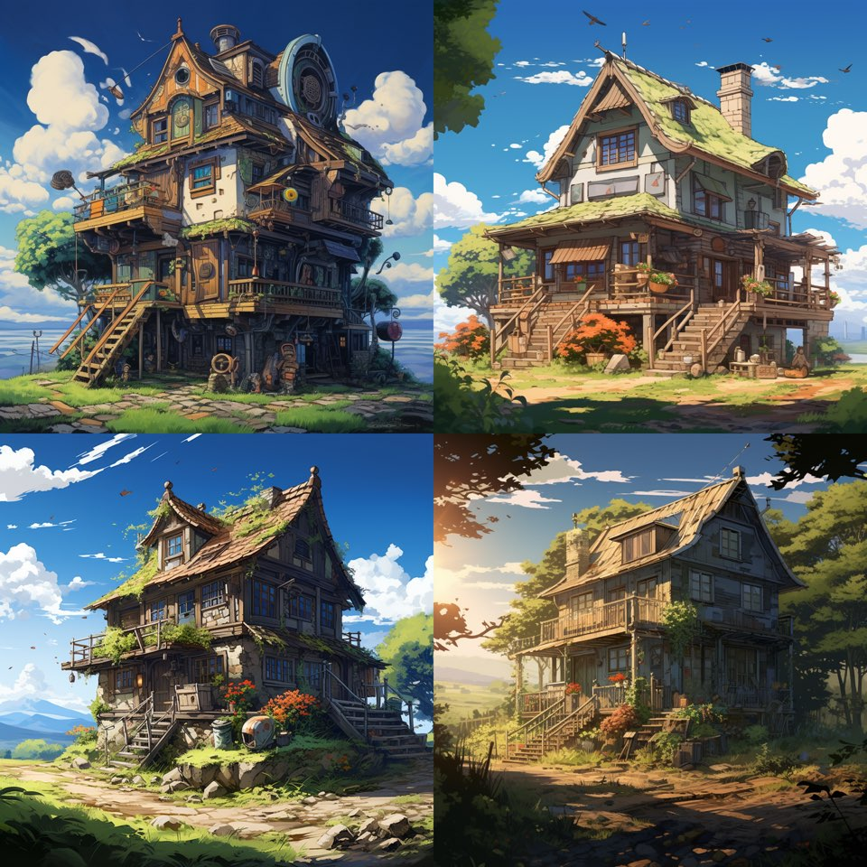
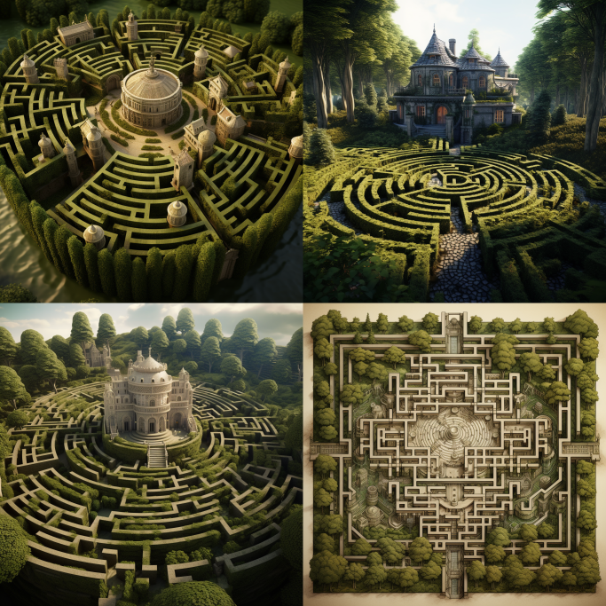
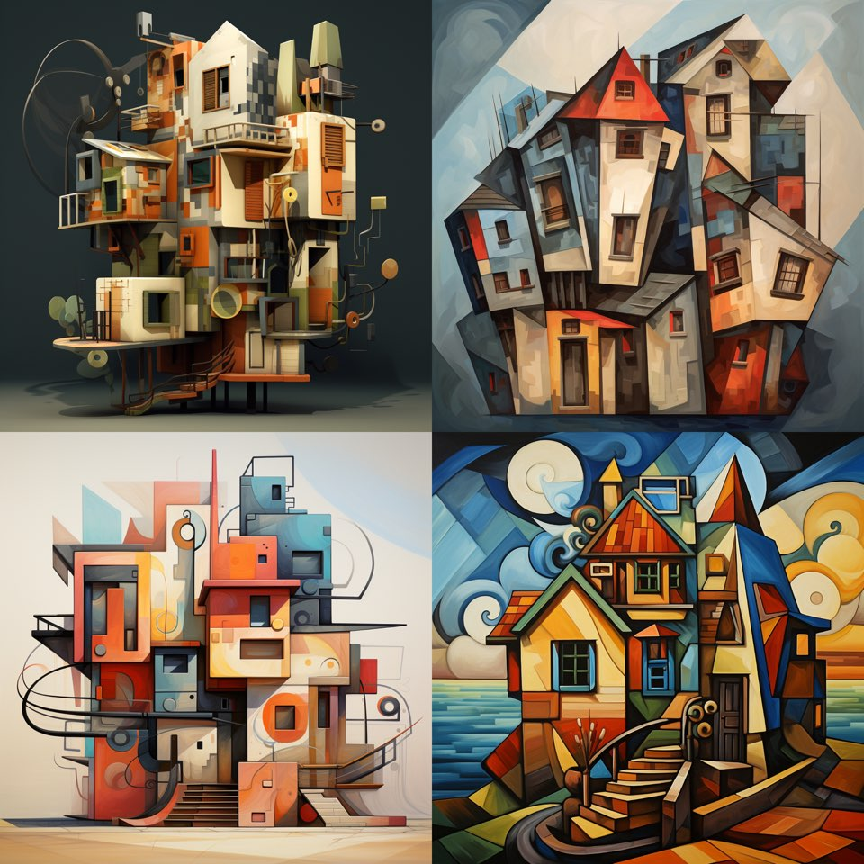

NeurIPSW 2024#
Paper: GLANCE Generating Limitless Artistic Novel Creative videos Effortlessly
논문 작성 동기#
이 연구는 음악 비디오 제작 과정에서 겪는 독립 뮤지션들의 어려움을 해결하기 위해 시작되었습니다. 음악 산업 관계자들과의 심층 인터뷰를 통해 기존 플랫폼들이 제공하지 못하는 창의적 단계를 이해하고 적용하는 데의 어려움을 발견했습니다. 이를 바탕으로, Stable Diffusion 기술을 활용하여 뮤직비디오 제작이 가능한 새로운 프레임워크인 GLANCE를 개발하게 되었습니다. 이 프레임워크는 실제로 전시회 작품 제작에 사용되었으며, 관람객들을 대상으로 한 데모 시연을 통해 얻은 피드백은 GLANCE가 음악 산업 내에서 창의적이고 실용적인 해결책을 제공할 수 있음을 보여주었습니다. GLANCE는 음악가들이 기술적 전문지식이 없어도 직관적이고 시각적으로 매력적인 음악 비디오를 제작할 수 있도록 지원하며, 예술적 비전과 기술적 구현 사이의 간극을 해소하여 음악가들이 자신의 음악과 조화를 이루는 비디오를 집중적으로 제작할 수 있도록 돕습니다.
논문에서 제시한 방법론#
본 논문에서 제안하는 GLANCE 프레임워크는 음악가들이 자신의 음악에 맞는 비디오를 직접 제작할 수 있도록 지원합니다. 이 시스템은 음악 특징을 자동으로 추출하고, 분석합니다. 음악가는 프롬프트, 스타일, 카메라 무브먼트 등을 직접 설정하여 독특하고 개성 있는 뮤직비디오를 창조할 수 있습니다. 또한, Prompt Engineering 을 제공하여, 최적의 프롬프트를 제공합니다. 실험 결과는 이 프레임워크가 음악가의 창작 과정을 얼마나 효과적으로 지원하는지 보여줍니다. 이를 통해 음악가들은 기술적 전문 지식 없이도 창의적이고 매력적인 음악 비디오를 제작할 수 있게 됩니다.
실험결과#
Help generating elaborate text prompts using LLM#
LLM을 사용한 세밀한 텍스트 프롬프트 생성 돕기 그림 3b에서는 Large Language Model (LLM) 모델을 사용하여 프롬프트 엔지니어링이 적용되었으나, 3a는 그렇지 않았습니다. 그림 3b의 향상된 이미지 품질은 3a와 비교하여 분명합니다. 그러나 사용자들은 “Canon EOS 5D Mark IV”와 같은 독특한 프롬프트를 고안하는 것을 어려워할 수 있습니다. GLANCE는 프롬프트 엔지니어링을 통해 이미지 품질을 개선함으로써 이에 대한 해결책을 제공합니다.
w / o Prompt Engineering |
w / Prompt Engineering |
|---|---|
3a |
3b |
|
|
finger |
finger, a slender digit adorned with a delicate silver ring, a close-up shot with a blurred background of blooming roses, capturing the elegance and subtlety of the moment, Photography, Canon EOS 5D Mark IV with a 50mm lens |


Show intuitive samples of various art style#
사용자들은 일반적으로 많은 예술가들의 독특한 스타일에 대해 잘 알지 못합니다. 그러나 Midjourney나 Stable diffusion 같은 도구를 사용할 때, 스타일이 이미지 다양성에 큰 영향을 미친다는 것이 명백해집니다. 그림 4를 보면, 선택된 예술적 스타일에 따라 집의 묘사가 크게 달라집니다. 본질적으로, LLM 모델을 활용하는 GLANCE는 사용자에게 예술가 스타일에 대한 통찰력을 제공하여 다양한 시각적 표현을 생성할 수 있도록 돕습니다.
그림 4 |
그림 4 |
|---|---|
 |
|
a house, in the style of anime art |
a house, in the style of Baroque |
 |
 |
a house, in the style of Celtic Maze |
a house, in the style of cubism |